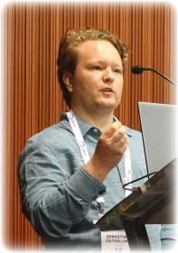
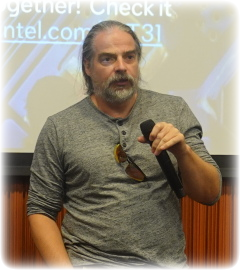

Enhancing FineIBT
At the Linux Security Summit Europe (LSS EU), Scott Constable and Sebastian Österlund gave a talk on an enhancement to a control-flow integrity (CFI) protection that was added to the kernel several years ago. The "FineIBT: Fine-grain Control-flow Enforcement with Indirect Branch Tracking" mechanism was merged for Linux 6.2 in early 2023 to harden the kernel against CFI attacks of various sorts, but needed some fixes and enhancements more recently. The talk looked at the CFI vulnerability problem, FineIBT, and an enhanced version that is hoped to be able to unify all of the disparate hardware and software mitigations to address both regular and speculative CFI vulnerabilities.
Constable began with introductions. He is a defensive-security researcher
for Intel Labs, while Österlund is an offensive-security researcher on the
Intel STORM team. Constable offered thanks to various people for their
help on the feature, including Peter Zijlstra, who developed the patches
and was present for the
talk. Beyond that, Constable thanked the "tremendous
" Linux kernel
community, which "really helped to refine this enhancement throughout a
very lively discussion
", resulting in a patch set that was "a lot
better
".
In addition to the lengthy corporate disclaimer boilerplate shown in the slides,
he noted that the speakers had a disclaimer of their own. "We will
shamelessly and unapologetically be using the Intel assembly syntax
throughout this presentation
", he said, to a few groans from the
audience; Linux uses AT&T syntax, which is the other primary x86 syntax.
Problem
The problem being addressed is known as call-oriented
programming: "an adversary doing something to redirect an indirect
function call from the correct, or intended, target
" to a malicious
target, Constable said. It is an old problem that has been revisited many times;
in the talk, they would be describing a new approach to solving it.
The problem comes in two flavors; at the architectural level, bugs like
buffer overflows and use-after-free flaws allow pointer corruption for
malicious redirection. At the microarchitectural level, the Spectre
family of vulnerabilities shows ways to exploit things like indirect-branch
misprediction for malicious purposes.
The solution on the architectural side has been present since Linux 6.2, at
least for those using the Clang compiler on x86_64: FineIBT. An extension
to the instruction-set architecture for x86_64, called control-flow
enforcement technology (CET), includes indirect
branch tracking (IBT) support that is coupled with kernel changes to "enforce fine-grained
forward-edge CFI
". But the picture on the microarchitectural side is far
less clear-cut; "there's no unified solution
". Instead, there are a
variety of "knobs and bits
" scattered in different model-specific
registers (MSRs) "by different hardware vendors who define them a little
bit differently from one another
". It is all platform- and
vendor-specific, which makes it "difficult to navigate if you are not
deeply familiar with the literature of side-channel vulnerabilities or
speculative-execution vulnerabilities
".
A unified solution, for both sides of the forward-edge CFI problem, was the
focus of the talk, Constable said; the hope is that at some point in the
future, there will be no need to rely on all of the different
platform-specific mitigations. He handed off to Österlund to give more
background on the vulnerabilities that are being addressed. Österlund said
he would begin with "some light morning material
" about Spectre.
The Spectre family of vulnerabilities was first disclosed in early 2018; once that happened,
variants kept popping up. One of those was branch-target injection (BTI),
where an attacker can "inject a target for an indirect call, which will
be executed speculatively
". An attacker trains the branch predictor to
target a "gadget" that does what is needed. Mitigations were created for
that vulnerability, but researchers came up with others, such as the branch-history injection (BHI) vulnerability.
There are variety of mitigations that have been used to avoid these
problems. They are a mix of software (e.g. retpolines),
microcode updates (e.g. the indirect-branch-predictor
barrier), and hardware mitigations (e.g. IBT), which need to
cooperate. There are MSR bits to disable some behavior, as well. All
of these mitigations have different performance tradeoffs; "once we
enable all of these, you might end up with quite a significant performance
overhead
".

He went through an example of how an attack might work. First, the attacker runs code in user space that trains the branch predictor to favor a pre-chosen gadget location in the kernel for the indirect function pointer; the gadget will leave some kind of microarchitectural trace, typically in the CPU caches, that can be used to exfiltrate some data. The attacker causes the kernel to call the indirect function via some system call; the CPU then speculatively executes the gadget. The attacker then retrieves the information via timing access to the data or some other mechanism. In a more detailed example, he showed how the value in a particular element of an array holding a secret could be determined by arranging that the gadget evicts an entry from the cache based on the value; when measuring the access time, a slow access indicates the evicted value and its offset determines what the secret value was. Rinse and repeat.
There have been "a bunch of mitigations
" for Spectre BTI, including
enhanced
indirect branch restricted speculation (eIBRS), which "kind of makes
sure that you can't train these branch-target buffers from user space
".
But researchers came up with a BHI variant that circumvented eIBRS.
Attackers could still influence the branch-history buffer from user space,
which impacted the indirect function chosen from the branch-target buffer.
The IBT mechanism requires that all indirect branches target sites that
contain an ENDBR64 instruction. If the target does not have that
instruction, a fault is generated; "the nice thing is that it limits
both architectural and speculative targets
" to require the
ENDBR64. That eliminates "a large part of the attack
surface
", but is not a full CFI solution because legitimate targets can
be used as gadgets. It has been something of a cat-and-mouse game,
Österlund said, with mitigations being circumvented by new vulnerabilities,
which are mitigated, and so on.
On a slide, he listed a few different papers that he recommended for more
information before handing back to Constable.
FineIBT
The last time he scanned the kernel source, Constable found "tens of thousands
of unique indirect call targets
", he said. With that many
targets, IBT is not sufficient to mitigate the problem; there are simply
too many gadgets in the kernel that start with the required ENDBR64
instruction.
So, FineIBT was developed on top of IBT to cut down on the number of gadgets available. At each site where an indirect function is called, the compiler will calculate a 32-bit hash of the function pointer's type. It puts that hash into a register, which is checked by the call site to ensure that a pointer of the right type was used for the call. Both the regular IBT ENDBR64 check and the hash match are combined for much stronger forward-edge CFI protection.
While Linux has tens of thousands of indirect call targets, it only has around 11,000 unique function types (including function arity, argument types, and return type) for those targets. A question that often gets asked, he said, is about hash collisions. Since it is a 32-bit hash, a collision between two types is unlikely.
From the slides, the FineIBT version of the start of an indirect function, looks like the following:
__cfi_\func:
ENDBR64 # endbr instruction
SUB R10D, 0x12345678 # check hash
JZ \func
UD2 # error (undefined opcode)
NOP3
\func: # real function
The hash check has a conditional jump (JZ)
instruction, however, so mitigating the microarchitectural vulnerability is
less effective. The jump instruction can be predicted, thus it can be
mispredicted; if both the indirect call and the conditional jump are
mispredicted, speculative execution could proceed into a function with the
wrong type. "That could allow a gadget to be executed and that could
allow a potential data exposure
", he said.
The solution, called FineIBT+BHI because it was initially developed as
"a novel mitigation to address branch-history injection
", uses an
instruction that is not subject to prediction. That instruction
poisons the registers that are live at the target function, which contain
the function arguments of interest to the attacker.
So the start of an indirect function looks like the
following:
__cfi_\func:
ENDBR64 # endbr instruction
SUB R10D, 0x12345678 # check hash
JZ .poison
UD2 # error (undefined opcode)
.poison:
CMOVNZ RDI, R10 # poison first argument
\func: # real function
The idea is that if the CPU speculates to the .poison label, the
first argument to the function (in register RDI) will be overwritten with
the (non-zero) result of the hash-check subtraction.
Using the result of the subtraction has some useful properties, he said. For one thing, the hash value (and thus the subtraction) is only done on the lower half of the R10 register, which means the CPU will clear the upper half. When the hash value is not correct, the result in the register is value with all zeroes in the upper 32 bits—making it a user-space address in Linux. Because of supervisor-mode access protection (SMAP), accessing a user-space address from the kernel will result in a trap. In addition, the hash values at the call site and in the function are immediate values in the kernel binary, thus the subtraction is some constant value, so the attacker-controlled arguments will be poisoned with a constant that cannot be used as a pointer.
Challenges
There were some challenges to making this work, of course. In order to poison all of the live arguments to the function, the code needs to know how many arguments the function called indirectly actually takes. The feature already uses the kCFI infrastructure, which generates the hash values FineIBT uses into a 16-byte stub placed before each indirect-call target. FineIBT extracts the hash value and replaces the stub with its own code (as seen above).
The kCFI stub stores the hash value as part of a MOV instruction that is not executed. Constable authored a small change to LLVM for kCFI that would encode the arity of the function into the destination register of the MOV instruction. That way, the kernel knows which registers need to be poisoned (because they are presumed to be under attacker control) when speculative execution takes place.
As it turns out, even just poisoning a single register (as was shown in the code above) produces code that is larger than the 16 bytes available to be run-time patched into the kCFI stub; as shown, it requires 17 bytes for that code. Using some trickery avoids that problem:
__cfi_\func:
ENDBR64 # endbr instruction
SUB R10D, 0x12345678 # check hash
JNZ -7
.poison:
CMOVNZ RDI, R10 # poison first argument
\func: # real function
Getting rid of the undefined opcode to cause a fault saves two bytes, but
requires a different jump. A jump if non-zero (JNZ) instruction
is used instead; the -7 argument causes the jump to go to a byte inside the
SUB opcode (0xea). That value corresponds to a far-jump opcode
that is not present in 64-bit processors, thus it will fault.
That code only requires 15 bytes, but it also only handles poisoning a single register. For indirect calls that have more than one argument, the CALL opcode can be used to call an arity-specific subroutine with the right CMOVNZ operations; that results in a 16-byte stub. In general, the penalty for FineIBT+BHI is far less than that of a branch misprediction; Constable calculated that the penalty is roughly three cycles versus 15-20 for a misprediction.
Österlund then reported on some benchmarking that has been done. Intel
engineers chose three different microarchitectures to measure, representing
both server and desktop processors. They ran "a bunch of
benchmarks
", including the Phoronix test suite OS
benchmark and UnixBench;
in his opinion, the Phoronix benchmark is the most representative because
it uses "a bunch of real-world workloads
". The difference in
overhead between
FineIBT and FineIBT+BHI "is negligible
". Overall, most benchmarks
show less than 1% performance loss, and some microarchitectures show an
improvement over FineIBT alone.
Constable noted that of the three shown, two "showed negative
overhead
" compared to FineIBT.

FineIBT+BHI is a work in progress, Constable said, but the goal is to make
it "the forward-edge CFI solution for the Linux kernel on Intel
processors
". Something that they are working on currently is that
FineIBT, thus FineIBT+BHI, depend on kCFI, which in turn depends on Clang.
The patches for kCFI have not landed in GCC, though Zijlstra pointed out
that a patch set had
been posted the week before the talk. There are also some Intel processors
that require hardware-based mitigations to address backward-edge
(return-based) CFI; those mitigations cannot be disabled, yet, but the
intent is to get to a point where they can be, Constable
said.
Another question that is often asked is about "type confusion": whether two
indirect call targets with the same type, thus the same hash, but have
different behavior, Constable said. Can something malicious happen when
redirecting one to the other? An example, that is unfortunately not
uncommon in Linux, is a function with one or two arguments, where one of
them is a void pointer; the pointer may be cast to wildly different types
in the target functions. Theoretically, "you could concoct a malicious
gadget
", but research has been done to determine if there are "such
gadgets that exist in the Linux kernel
"; two researchers for Tel Aviv
University looked
at the question (among others) and did not find any exploitable gadgets
of that sort. Intel also did some internal research using a different
methodology that also did not find any evidence that type confusion can
result in exploitable vulnerabilities.
An audience member asked about using salt or some other mechanism to ensure that hash collisions due to type confusion did not occur. Zijlstra noted that there are some ideas floating around to ameliorate that potential problem. For example, filesystem function pointers and scheduler function pointers might have the same type, but are unrelated. They could be given different hash values as part of the kernel build. There is also a request for being able to explicitly annotate functions in a way that would change their hash to avoid type confusion.
Another attendee asked about using the far-jump opcode versus UD2; do they have the same effect? Zijlstra said that they do, but that the Intel architects were not particularly happy that the opcode is being used in that manner; they want to reserve it for future expansion. A single-byte UDB instruction (opcode 0xd6) has been approved for upcoming processors, which meant that Zijlstra needed to rejigger the whole FineIBT+BHI instruction sequence, but he was able to do so.
The last question was about adding some kind of instruction in the future
that would immediately cause speculation to cease when the FineIBT checks
fail. Constable said that the current solution is fairly flexible and can
be adapted if some of the assumptions that are being made need to change.
"Once you take all of the assumptions we have today and bake them
into an instruction and then an assumption changes, it's tough.
" The
more flexible approach is not particularly expensive, so they are generally
happy to continue with it.
A YouTube video of the talk is available for those interested.
[I would like to thank the Linux Foundation, LWN's travel sponsor, for
supporting my trip to Amsterdam for Linux Security Summit Europe.]
| Index entries for this article | |
|---|---|
| Kernel | Security/Control-flow integrity |
| Security | Linux kernel |
| Conference | Linux Security Summit Europe/2025 |
Posted Oct 12, 2025 20:47 UTC (Sun)
by jandryuk (subscriber, #103122)
[Link]
https://git.kernel.org/pub/scm/linux/kernel/git/tip/tip.g...
Posted Oct 16, 2025 19:32 UTC (Thu)
by mbcook (subscriber, #5517)
[Link] (1 responses)
The assembly in FineIBT makes perfect sense to me.
But in FineIBT+BHI it doesn’t.
If the hash doesn’t match, they hit the bad opcode. That makes sense.
If the hash check is speculated to pass incorrectly, we poison the first argument. Speculation doesn’t get an attacker anywhere. Good.
If the hash actually is good and we take the branch to .poison, then we just poisoned the first argument in a legitimate call.
How is control ever supposed to get to the function body without a poisoned first argument? If it’s not, isn’t the first argument just useless then? So what has this accomplished?
Posted Oct 24, 2025 22:01 UTC (Fri)
by zwol (guest, #126152)
[Link]
When the function is called normally, the JZ instruction will jump and the CMOVNZ instruction will not move, so the function's arguments will be unmodified.
When the function is called illegitimately, the JZ instruction will not jump, and so the "real" execution trace will execute the UD2 and trap (or do the other thing described later in the article). But a speculative execution trace might guess that the JZ does jump. Here's the key bit: even if it's being executed speculatively, CMOV is controlled by the real flags, not what the flags would have been if the speculation were correct. So, this CMOVNZ does move when (and only when) it's reached by an incorrect speculative trace, trashing the function's arguments and, hopefully, foiling whatever side-channel attack was depending on speculative execution into a function that shouldn't have been called.
This detail of CMOV seems to me like a brittle thing to rely on for a security measure; I could easily imagine Intel or AMD's microarchitects deciding that in their next generation cores, speculative CMOV should be controlled by flags consistent with the speculation. Hopefully there's enough communication between those people and the FineIBT people that if this happens, they get plenty of warning.
UDB instruction
Could someone explain the poisoning more?
It's pretty subtle, I had to read it over several times to get it.
Could someone explain the poisoning more?